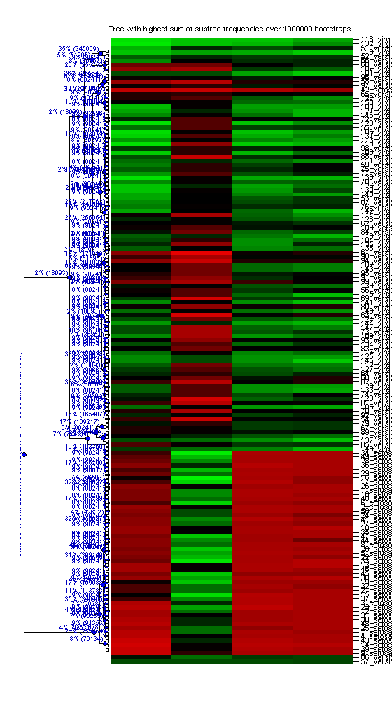

function [matBestTree, h, matAllSubtrees, matTreeLinkageSet, matLeafOrderPerm] = bootcluster(matInputData,cellDataLabels,intNumOfRounds,varargin) %BOOTCLUSTER bootstrapped clustering of data. % [matBestTree] = bootcluster(matInputData) calculates the tree structure % that has the highest sum of bootstrap scores over each bifurcation % point. Bootstrapping is performed by subsampling to oversampling from % the columns of the input data matrix, with a sampling ratio of % 0.5:0.1:1.4 (slightly more subsampling than oversampling). % % matInputData will be clustered over the rows. If the number of rows is % equal to the number of columns, the final visualization will apply the % best clustering to both dimensions. % % [matBestTree,h] = bootcluster(matInputData) % also returns the figure handle h. % % [~, ~, matAllSubtrees] = bootcluster(matInputData,cellDataLabels,intNumOfRounds,varargin) % also returns the 3D stack of generated binary trees (as output by % the linkage function) % % [~, ~, ~, matTreeLinkageSet] = bootcluster(matInputData,cellDataLabels,intNumOfRounds,varargin) % also returns the internal data structer that is used to count the % occurence of each subtree in the set of trees of matAllSubtrees. % % [~, ~, ~, ~, matLeafOrderPerm] = bootcluster(matInputData,cellDataLabels,intNumOfRounds,varargin) % also returns that permutation required to reproduce the final % clustering. % % Note that this code uses parfor to make use of parallel computing. % Search for the word 'parfor' and replace with 'for' if you do not want % to use parallel processing. % % Varying the number for the input parameter intNumOfRounds will greatly % affect runtime but also the output. Consider lowering (10000) for % faster runtimes on larger datasets, and increasing (1000000) for % more robust clustering results. % % The code is similar to described in % http://ch.mathworks.com/help/bioinfo/examples/bootstrapping-phylogenetic-trees.html % but differs in that it does not just count the number of equal clusters % but exactly equal subtrees, and returns the best tree based on the sum % of subtree bootstrap scores. % % Example BOOTCLUSTER usage on the MATLAB fisheriris dataset: % % X = load('fisheriris'); % matData = zscore(X.meas); % cellSpecies = strcat(arrayfun(@(x) {[num2str(x),'_']},1:size(X.species,1))',X.species); % % [matBestTree, h, matAllSubtrees, matTreeLinkageSet, matLeafOrderPerm] = bootcluster(matData,cellSpecies,100000); % % % to plot just the best tree: % view(phytree(matBestTree,cellSpecies)) % % % to compare this to non-bootstrapped clustering % clustergram(matData,'RowLabels',X.species,'cluster',1) % % Note that this code has several undocumented features. I would recommend % reading through the source code prior to usage. % % For more information to this code also read the help and information on % its included subfunctions. % % % % This code was first used and published in the following publication. % Please cite this publication if you use this code in your research. % % Single-cell analysis of population context advances RNAi screening at % multiple levels. % http://msb.embopress.org/content/8/1/579.long % % Snijder B, Sacher R, Rämö P, Liberali P, Mench K, Wolfrum N, Burleigh % L, Scott CC, Verheije MH, Mercer J, Moese S, Heger T, Theusner K, % Jurgeit A, Lamparter D, Balistreri G, Schelhaas M, De Haan CA, % Marjomäki V, Hyypiä T, Rottier PJ, Sodeik B, Marsh M, Gruenberg J, % Amara A, Greber U, Helenius A, Pelkmans L. % % Mol Syst Biol. 2012 Apr 24;8:579. doi: 10.1038/msb.2012.9. % % See also https://github.com/pelkmanslab and % http://msb.embopress.org/content/8/1/579.long and % http://ch.mathworks.com/help/bioinfo/examples/bootstrapping-phylogenetic-trees.html. % % Copyright 2015 Berend Snijder - bsnijder@gmail.com matLeafOrderPerm = []; if nargin==0 % if the number of input arguments is 0, run in demo mode. warning('bs:Bla','Running in demo mode using the ''fisheriris'' dataset') X = load('fisheriris'); matInputData = zscore(X.meas); cellDataLabels = strcat(arrayfun(@(x) {[num2str(x),'_']},1:size(X.species,1))',X.species); elseif nargin==1 fprintf('%s: no data labels given\n',mfilename) cellDataLabels = num2strcell(1:size(matInputData,1)); elseif length(cellDataLabels) ~= size(matInputData,1) fprintf('%s: data label size does not match data size. Using default\n',mfilename) cellDataLabels = num2strcell(1:size(matInputData,1)); end % how many trees to generate if nargin<3 intNumOfRounds = 1000000; end % bootstrap sample sizes (ratio of fraction) with resampling, loosly % modelled after what is done in the R-package pvclust. matRs = [0.5 0.6 0.7 0.8 0.9 1 1.1 1.2 1.3 1.4]; % get data dimensions [nRow,nCol] = size(matInputData); % check if there are NaNs present in the data. We are nan-robust, but it's % much slower, so preferably avoid NaNs if possible. if any(isnan(matInputData(:))) fprintf('%s: found %d NaNs in data, using slower nan-robust correlation distance\n',mfilename,sum(isnan(matInputData(:)))) boolNaNsPresent = true; else boolNaNsPresent = false; end boolUserFunc = false; strFuncHandle = 'correlation'; %default function boolCorr = true; matPossibleFunctionHandle = cellfun(@(x) isa(x,'function_handle'),varargin); if any(matPossibleFunctionHandle) & numel(matPossibleFunctionHandle)>0 strFuncHandle = varargin{find(matPossibleFunctionHandle,1,'first')}; fprintf('%s: detected user-passed function handle ''%s'', using this for distance measure\n',mfilename,func2str(strFuncHandle)) boolUserFunc = true; boolCorr = false; end boolCorrEucl = cellfun(@(x) strcmpi(x,'pdist_corr_eucl'),varargin); if boolCorrEucl boolCorr = false; disp('doing fast experimental correlation + euclidean method') elseif boolCorr disp('doing fast correlation method') end matPossibleRGBColors = cellfun(@(x) isa(x,'double') & size(x,3)==3,varargin); boolUserRGB = false; if any(matPossibleRGBColors) & numel(matPossibleRGBColors)>0 matRGB = varargin{find(matPossibleRGBColors,1,'first')}; fprintf('%s: detected user-passed colormap\n',mfilename) boolUserRGB = true; end % initialize the matrix containing all the tree linkages from the % bootstrapping procedure matTreeLinkageSet = zeros(nRow-1,3,intNumOfRounds); fprintf('%s: starting %d bootstrap runs\n',mfilename,intNumOfRounds) iBCounter = 0; % loop over each bootstrap sample size for r = matRs tic; fprintf('%s: processing ratio %g',mfilename,r) % parallel loop over each bootstrap (where the total number of % bootstraps is divided by the number of bootstrap sample sizes) parfor iBoot = 1:round(intNumOfRounds / length(matRs)) % randomly sample with replacement from all columns, according to % the current bootstrap sample size data = single(matInputData(:,randsample(nCol,floor(nCol*r),true))); %#ok<PFBNS> % calculate correlation distance matrix, NaN-robust if NaNs are % present if boolNaNsPresent distancematrix = squareform_bs(1-corr(data','rows','pairwise')); else if boolCorrEucl % I noticed pdist_corr_eucl does not do sqrt of euclidean % distance... distancematrix = abs(bsxfun(@plus,dot(data',data',1)',dot(data',data',1))-2*(data*data')); distancematrix = (distancematrix ./ max(distancematrix(:))) + ((1 - corr(data'))/2); distancematrix(isnan(distancematrix)) = 2; elseif boolCorr distancematrix = 1-corr(data'); else distancematrix = pdist(data,strFuncHandle); end end % set NaN-distance to max distance of 2. distancematrix(isnan(distancematrix)) = 2; % calculate linkage t = linkage(distancematrix,'average'); if any(isnan(t(:,3))) keyboard end % store linkage for current bootstrap in matTreeLinkageSet matTreeLinkageSet(:,:,iBCounter+iBoot) = t; end % increment counter (outside of parfor loop) iBCounter = iBCounter + round(intNumOfRounds / length(matRs)); fprintf(' (in %.1fs)\n',toc) end % count how often each identical subtree occurs in the set of linkages [matAllSubtrees, matTreeLinkageSet] = analyze_subtrees_in_linkages(matTreeLinkageSet); % calculate the sum subtree score for each node of the entire tree matSumSubtreeFrequencyPerTree = NaN(size(matTreeLinkageSet,3),1); for iTree = 1:size(matTreeLinkageSet,3) % sum edge scores matSumSubtreeFrequencyPerTree(iTree) = sum(matAllSubtrees(matTreeLinkageSet(:,4,iTree),4)); end % find the tree with the highest sum of subtree frequencies [~,intMaxIX] = max(matSumSubtreeFrequencyPerTree); % store best tree for output matBestTree = matTreeLinkageSet(:,1:3,intMaxIX); % create a phytree object from linkage, present in the Matlab % Bioinformatics Toolbox. Note that only the first three columns should be % passed, as the fourth column contains the subtree-id for each % branchpoint. objPhyTree = phytree(matBestTree,cellDataLabels); % plot the tree h = plot(objPhyTree,'Type','square'); drawnow for iBranch = 1:length(h.branchNodeLabels) % get the handle to the current branch hBranch = h.branchNodeLabels(iBranch); % calculate absolute and percentage occurence of current branch intSubtreePercent = 100*matAllSubtrees(matTreeLinkageSet(iBranch,4,intMaxIX),4); intSubtreeCount = round(intNumOfRounds*matAllSubtrees(matTreeLinkageSet(iBranch,4,intMaxIX),4)); % add text-label to each branch, different for root than for other branches if iBranch == length(h.branchNodeLabels) % root set(hBranch,'Visible','on','String',sprintf('\\color[rgb]{0 0 0.75}subtree %% and absolute count (%.0f%% and %d times for root)',intSubtreePercent,intSubtreeCount), ... 'FontSize',8,... 'Interpreter','TeX',... 'HorizontalAlignment','center',... 'VerticalAlignment','bottom',... 'Rotation',90) else % branch set(hBranch,'Visible','on','String',sprintf('\\color[rgb]{0 0 0.75}%.0f%% (%d)',intSubtreePercent,intSubtreeCount),... 'FontSize',7,... 'Interpreter','TeX') end end if ~any(cellfun(@(x) strcmpi(x,'noheat'),varargin)) % experimental, let's add a heatmap that has the ordered data in the right % order next to the tree. % shrink the width of the dendogram matDendogramPosition = get(h.axes,'Position'); matDendogramPosition = matDendogramPosition.*[1,1,.3,1]; set(h.axes,'Position',matDendogramPosition); % remove box and background color set(h.axes,'Box','off') set(h.axes,'Color','none') set(h.axes,'Visible','off') % the reordering of the data rows is dependent on the leaf-order of the % dendogram [~,matLeafOrderPerm] = ismember(get(objPhyTree,'LeafNames'),cellDataLabels); % get leaf positions set(h.terminalNodeLabels,'Visible','off') % matLeafPositions = get(h.leafNodeLabels,'Position'); % calculate heatmap axis position % matHeatMapAxisPosition = [matDendogramPosition(1) + matDendogramPosition(3),matDendogramPosition(2),1-(matDendogramPosition(1) + matDendogramPosition(3)+0.05),matDendogramPosition(4)]; matHeatMapAxisPosition = matDendogramPosition; % left start: start after dendogram (i.e. offset + width) matHeatMapAxisPosition(1) = matHeatMapAxisPosition(1) + matHeatMapAxisPosition(3); % width: entire figure width minus width of dendogram (see start), plus % margin for labels. matHeatMapAxisPosition(3) = 1 - (matHeatMapAxisPosition(1) + 0.1); % bottom: a bit higher than dendogram. matHeatMapAxisPosition(2) = matHeatMapAxisPosition(2) * 1.6; % height: less than dendogram matHeatMapAxisPosition(4) = matHeatMapAxisPosition(4) - (matDendogramPosition(2)*1.2); % %%% experimental column ordering... % % calculate column ordering from a single clustering... % Y1 = pdist(data4bootstrap',@pdist_corr); % Z1 = linkage(Y1,'average'); % hDend = figure(); % [~,~,matColPerm] = dendrogram(Z1) % close(hDend) % %%% end experiment % create new axis and draw heatmap in right order (according to leafs) hold on hMap = axes('Position',matHeatMapAxisPosition); % hMap = axes(); % colormap(flipud(smoothcolormap(redbluecmap))) colormap(flipud(smoothcolormap(redgreencmap))) % matZscores = nanzscore(data4bootstrap')'; % if we're dealing with a square matrix, order both rows and columns % according to clustering. otherwise just the rows. if boolUserRGB % user supplied colors imagesc(matRGB(matLeafOrderPerm,matLeafOrderPerm,:)); elseif size(matInputData,1)==size(matInputData,2) % for colors, assume distance matrix: [-1, 1] imagesc(matInputData(matLeafOrderPerm,matLeafOrderPerm),[-1,1]) else % imagesc(data4bootstrap(matLeafOrderPerm,:),[-1.5,1.5]) imagesc(matInputData(matLeafOrderPerm,:),[-5 5]) end set(hMap, ... 'Box','off',... 'YTick',[1:length(cellDataLabels)],... 'XTick',[],... 'YAxisLocation','right',... 'YTickLabel',cellDataLabels(matLeafOrderPerm),... 'TickDir','out',... 'FontSize',8 ... ); end title(sprintf('Tree with highest sum of subtree frequencies over %d bootstraps.',intNumOfRounds)) hold off drawnow end% and we are done :) function c = num2strcell(n, format) % num2strcell Convert vector of numbers to cell array of strings % function c = num2strcell(n, format) % % If format is omitted, we use % c{i} = sprintf('%d', n(i)) if nargin < 2, format = '%d'; end N = numel(n); c = cell(size(n)); for i=1:N c{i} = sprintf(format, n(i)); end end function [matAllSubtrees, matOrigTreeLinkageSet] = analyze_subtrees_in_linkages(matTreeLinkageSet) % function analyze_subtrees_in_linkages(matTreeLinkageSet) % Help for analyze_subtrees_in_linkages % % Usage: % % [matAllSubtrees, matOrigTreeLinkageSet] = analyze_subtrees_in_linkages(matTreeLinkageSet) % % % Input: matTreeLinkageSet is a series of linkages (agglomerative % hierarchical cluster trees) as ouptut by the matlab function "linkage". % The linkages should be concatenated in the third dimension, and contain % the same leaf nodes. Typically, they are bootstrapped trees from the same % data. matTreeLinkageSet size is [m, 3, n], where m is the number of % leafs-1, and n is the number of bootstraps. % % output: matAllSubtrees % matAllSubtrees is a matrix similar to output of linkage, except that the % columns have the following values, which result from aggregating all % trees in matTreeLinkageSet: % % SUBTREE-ID | SUBTREE-ID-NODE1 | SUBTREE-ID-NODE2 | SUBTREE-COUNT % % % output: matOrigTreeLinkageSet % matOrigTreeLinkageSet contains the original input matTreeLinkageSet with % column 4 containing the new index, or SUBTREE-ID of each branch, % corresponding to the SUBTREE-ID in matAllSubtrees. % % Looking up the bootstrap frequency of each subtree-id in the fourth % column of matTreeLinkageSet allows one to calculate total scores per % tree. % % Berend Snijder, 2011. % count number of leafs. intLeafCount = size(matTreeLinkageSet,1)+1; % count number of bootstraps. intBootstrapCount = size(matTreeLinkageSet,3); % report fprintf('%s: starting subtree analysis on %d bootstrapped trees, each with %d leafs\n',mfilename,intBootstrapCount,intLeafCount) % Sort to always have lowest number in first column and higher number in % second column, which equals rotating branches. Since we are returning % this, it means we are not preserving tree-structures perfectly between % input and output, but i don't see how that will hurt anybody now. (we % could store sorting and return to original sorting at end of script.) fprintf('%s: rotating branches of all trees\n',mfilename) matTreeLinkageSet(:,[1,2]) = sort(matTreeLinkageSet(:,[1,2]),2); % keep copy of original tree structure, with added fourth column of zeros % to put in the subtree-ids. matOrigTreeLinkageSet = [matTreeLinkageSet(:,1:3,:),zeros(intLeafCount-1,1,intBootstrapCount)]; % discard distance data from the trees set matTreeLinkageSet(:,3:end,:) = [];
we can first get a listing of all unique linkages and leaf-sets that connect assay-pairs (leafs) directly. for these connections we can do the fast sorted-unique-last trick which get's all unique assay-links and their counts pretty fast. this takes care of about half of all branches in the entire dataset and should speed up the algorithm considerably.
% report fprintf('%s: analyzing all branch points that connect two leaf sets\n',mfilename) % let's reshape matTreeLinkageSet such that all bootstrapped trees are % concatenated below eachother, i.e. final size equals: % size = [(intLeafCount-1) * intBootstrapCount, 2] matTreeLinkageSet=matTreeLinkageSet(:,:); matTreeLinkageSet=[lin(matTreeLinkageSet(:,1:2:end-1)),lin(matTreeLinkageSet(:,2:2:end))]; % a quick sanity check, note that this is always passed if not(... isequal(matTreeLinkageSet(1:(intLeafCount-1),:),matOrigTreeLinkageSet(:,1:2,1)) && ... isequal(matTreeLinkageSet(end-(intLeafCount-2):end,:),matOrigTreeLinkageSet(:,1:2,end))) error('hm, reformatting of data failed') end % here's a neat trick, since for the assay-connections at least the edges % can be considered sub-indices of a [(intLeafCount*2)-1 * (intLeafCount*2)-1] % size matrix, therefore we can process the indices as unique identifiers % for the edges (subindices) at least for those edges that directly connect % leafs. % this is the dimension of the matrix via which we do the subindex --> % index reformatting. matMatrixSize = [(intLeafCount*2)-1,(intLeafCount*2)-1]; % now do the sub-index to index remapping. matEdgeSubIX = sub2ind(matMatrixSize,matTreeLinkageSet(:,1),matTreeLinkageSet(:,2)); % now get the branches that connect two assays directly, and get the unique % mapping for the indices for those branches. matTwoLeafsBranchIX = logical(matTreeLinkageSet(:,1)<=intLeafCount & matTreeLinkageSet(:,2)<=intLeafCount); % count how often each unique branch occurs [matCountPerValue,matUniqueValues,matIX2] = countNumberOfValues(matEdgeSubIX(matTwoLeafsBranchIX)); % report fprintf('%s: \t found %d unique branches connecting two leaf sets, making up %.1f%% of all branches\n',... mfilename,... length(matCountPerValue),... (100*(sum(matTwoLeafsBranchIX)/((intLeafCount-1)*intBootstrapCount)))... ) % put the subtree-ids of branches connecting two leafs in the fourth column % of the output matOrigTreeLinkageSet. % Note that the subtree-ids must be offset with intLeafCount, as % subtree-ids 1 to intLeafCount are reserved for leafs. matTreeLinkageSet2 = zeros([intLeafCount-1,1,intBootstrapCount]); matTreeLinkageSet2(matTwoLeafsBranchIX) = matIX2+intLeafCount; matOrigTreeLinkageSet(:,4,:) = matTreeLinkageSet2; % we can get rid of some large variables now clear matTwoLeafsBranchIX matTreeLinkageSet2 matTreeLinkageSet matEdgeSubIX matTwoLeafsBranchIX % Start filling in our collection of subtrees in matAllSubtrees % Note again, that the first link-id should begin after intLeafCount. % matAllSubtrees = [ SUBTREE-ID | NODE-1 | NODE-2 | OCCURENCE-OF-SUBTREE ] % fill in bogus 'ones' for the node-ids and occurence of subtrees matAllSubtrees = [(1:intLeafCount)',ones(intLeafCount,3)]; % append the subtree data for the branches linking two leafs matAllSubtrees = [matAllSubtrees;[(1:size(matUniqueValues,1))'+intLeafCount,ind2sub2(matMatrixSize,matUniqueValues),matCountPerValue]]; clear matUniqueValues matCountPerValue matMatrixSize
Now we start processing all higher-order subtrees. To keep track of all possible subtrees, I mark them in an growing 2D connection matrix, growing as we process higher order subtrees from the set of linkages. We keep track of each subtree by their subtree-id, which is the subindex of its connection in the 2D connection matrix. As the connection matrix is growing, we need to recalculate the subtree-indices.
% set current subtree-id intCurrentSubtreeID = max(matAllSubtrees(:,1)); % pre-initialize matAllLinkIndices. % % matAllLinkIndices is a vector that contains the subindices for all unique % subtrees. matAllLinkIndices = sub2ind([intCurrentSubtreeID,intCurrentSubtreeID],matAllSubtrees(:,2),matAllSubtrees(:,3)); % add some padding to pre-allocate memory in matAllSubtrees and % matAllLinkIndices... make a guess: "(1/4)*intLeafCount*intBootstrapCount" matAllSubtrees = [matAllSubtrees;zeros((1/4)*intLeafCount*intBootstrapCount,4)]; % report fprintf('%s: starting higher-order subtree analysis\n',mfilename) for i = 1:intLeafCount-1 % fprintf('%s: processing subtrees at depth %d of %d\n',mfilename,i,intLeafCount-1) % Get the slice from the current tree samples corresponding to the next %-in-line subtrees. matTs = squeeze(matOrigTreeLinkageSet(i,:,:))'; % See which edges haven't been processed yet (i.e. which don't yet have % a subtree-index stored in the fourth column of the corresponding % rows) matIXToProc = find(matTs(:,4)==0); % If there are none to process, continue to next subtree slice if isempty(matIXToProc) continue end
PROCESS SUBTREE-COUNTS And store in matOrigTreeLinkageSet(:,4,:) and matAllSubtrees
% the ids of nodes that refer to branch-points, not leafs, should be % updated to the matAllSubtrees branch-point ids (stored in column 4 of % the corresponding tree). % we might be able to matrix/process this via subindexing % gather those T-slices to process (i.e. for which the 4th column is 0) matTsToProc = matTs(matIXToProc,:); % find non-leaf nodes matIX = matTsToProc(:,1:2)>intLeafCount; matIXToProc2 = [matIXToProc,matIXToProc]; % find node ids for non-leaf nodes matSubIX = sub2ind(size(matOrigTreeLinkageSet),matTsToProc(matIX) - (intLeafCount),repmat(4,size(find(matIX))),matIXToProc2(matIX)); clear matIXToProc2 matTsToProc(matIX) = matOrigTreeLinkageSet(matSubIX); % convert to indices matTsToProcLinkIndices = (matTsToProc(:,1) + (matTsToProc(:,2)-1)*intCurrentSubtreeID); % count all unique indices that haven't been processed yet. % note that no value should be bigger than intCurrentSubtreeID. [matCountPerValue,matUniqueValues] = countNumberOfValues(matTsToProcLinkIndices); % check for all unique edges if they're already present [boolPresent, matCrossIX] = ismember(matUniqueValues,matAllLinkIndices(1:intCurrentSubtreeID)); % for the ones that are not yet present, add them as new unique links % in matAllSubtrees if any(~boolPresent) matNewSubtreeIDs = (intCurrentSubtreeID+1:intCurrentSubtreeID+(sum(~boolPresent)))'; matAllSubtrees(matNewSubtreeIDs,:) = [matNewSubtreeIDs, ind2sub2([intCurrentSubtreeID,intCurrentSubtreeID],matUniqueValues(~boolPresent)), matCountPerValue(~boolPresent)]; % and update intCurrentSubtreeID and matAllLinkIndices intCurrentSubtreeID = matNewSubtreeIDs(end); % note that this line does the subindex-2-index calculation matAllLinkIndices(1:intCurrentSubtreeID) = (matAllSubtrees(1:intCurrentSubtreeID,2) + (matAllSubtrees(1:intCurrentSubtreeID,3)-1)*intCurrentSubtreeID); end % for the ones that are present already in matAllSubtrees, add their % counts in matAllSubtrees if any(boolPresent) matAllSubtrees(matCrossIX(boolPresent),4) = matAllSubtrees(matCrossIX(boolPresent),4) + matCountPerValue(boolPresent); end % and put back the corresponding matAllSubtrees indices in the subtree-slice, % and subsequently in matOrigTreeLinkageSet. matTsToProcLinkIndices = (matTsToProc(:,1) + (matTsToProc(:,2)-1)*intCurrentSubtreeID); [boolPresent, matCrossIX] = ismember(matTsToProcLinkIndices,matAllLinkIndices(1:intCurrentSubtreeID)); if ~all(boolPresent) error('strange, we just added all the missing links so everything should be here!') end matOrigTreeLinkageSet(i,4,matIXToProc) = matCrossIX; % done! % fprintf('%s: \t %d unique subtrees gathered\n',mfilename,intCurrentSubtreeID) end % remove empty rows resulting from memory preallocation matAllSubtrees(all(matAllSubtrees==0,2),:) = []; % some sanity check before finishing. if any(matAllSubtrees(:,4)>intBootstrapCount) error('some EDGES occur more times than there are bootstraps... this isn''t possible!') end % normalize exact subtree score to retreival rate matAllSubtrees(:,4) = matAllSubtrees(:,4) / intBootstrapCount; % we're done % if we're done, and we're not interested in anyy output, make it empty. if nargout==0 matAllSubtrees=[]; end end% function function dataOut = lin(dataIn) % Help for function lin % % linearizes any matrix or cell array into a single column vector :) % % usage: % % dataOut = lin(dataIn) % % 2010, Berend Snijder dataOut = dataIn(:); end function [matCountPerValue,matUniqueValues,matIX2] = countNumberOfValues(x) % usage: % % [matCountPerValue,matUniqueValues,matIX2] = countNumberOfValues(x) % % Is a quick way to count how often each unique value occurs. The % unique values and their cross indices are returned as by "unique()" % % % example: % % [matCountPerValue,matUniqueValues,matIX2] = countNumberOfValues(x) % % bar(matUniqueValues,matCountPerValue) % % 2009, Berend Snijder [x,matSortIX] = sort(x); if nargout==3 [matUniqueValues,matIX,matIX2] = unique(x,'last'); % sort back matIX2 so that it corresponds to the original unsorted % "x" [~,matSortIX] = sort(matSortIX); matIX2 = matIX2(matSortIX); else [matUniqueValues,matIX] = unique(x,'last'); end matCountPerValue = NaN(size(matUniqueValues)); matPreviousIX = 0; for iValue = 1:size(matUniqueValues,1) matCountPerValue(iValue) = matIX(iValue)-matPreviousIX; matPreviousIX = matIX(iValue); end end function matCompleteDataBinIX = ind2sub2(matBinDimensions,matSubIndices) %#ok<STOUT,INUSD> % Wrapper for ind2sub, so we can handle different cases dinamically, % and ouput the output in a matrix rather than in independent % variables. (Could also be done by catching output in a cell array?) % Berend Snijder str2exec = '[I1'; for i = 2:size(matBinDimensions,2) str2exec = [str2exec,sprintf(',I%d',i)]; %#ok<AGROW> end str2exec = [str2exec,']']; eval(sprintf('%s = ind2sub(matBinDimensions,matSubIndices);',str2exec)); eval(sprintf('matCompleteDataBinIX = %s;',str2exec)); end function drawBestTree(matAllSubtrees, matOrigTreeLinkageSet,datalabels4bootstrap) % count number of bootstraps. intBootstrapCount = size(matOrigTreeLinkageSet,3); % calculate the sum subtree score for each tree matSumSubtreeFrequencyPerTree = NaN(size(matOrigTreeLinkageSet,3),1); for iTree = 1:size(matOrigTreeLinkageSet,3) % sum subtree scores matSumSubtreeFrequencyPerTree(iTree) = sum(matAllSubtrees(matOrigTreeLinkageSet(:,4,iTree),4)); end % find the tree with the highest sum of subtree frequencies [intTreeScore,intMaxIX] = max(matSumSubtreeFrequencyPerTree); % store best tree for output matBestTree = matOrigTreeLinkageSet(:,1:3,intMaxIX); % create a phytree object from linkage, present in the Matlab % Bioinformatics Toolbox. Note that only the first three columns should be % passed, as the fourth column contains the subtree-id for each % branchpoint. if nargin==3 objPhyTree = phytree(matBestTree,datalabels4bootstrap); else objPhyTree = phytree(matBestTree); end % plot the tree h = plot(objPhyTree,'Type','square'); % set(gca,'YMinorTick','off','YTick',[]) drawnow for iBranch = 1:length(h.branchNodeLabels) % get the handle to the current branch hBranch = h.branchNodeLabels(iBranch); % calculate absolute and percentage occurence of current branch intSubtreePercent = 100*matAllSubtrees(matOrigTreeLinkageSet(iBranch,4,intMaxIX),4); intSubtreeCount = round(intBootstrapCount*matAllSubtrees(matOrigTreeLinkageSet(iBranch,4,intMaxIX),4)); % add text-label to each branch, different for root than for other branches if iBranch == length(h.branchNodeLabels) % root set(hBranch,'Visible','on','String',sprintf('\\color[rgb]{0 0 0.75}subtree %% and absolute count (%.1g%% and %d times for root)',intSubtreePercent,intSubtreeCount), ... 'FontSize',8,... 'Interpreter','TeX',... 'HorizontalAlignment','center',... 'VerticalAlignment','bottom',... 'Rotation',90) else % branch if intSubtreePercent < 1 set(hBranch,'Visible','on','String',sprintf('\\color[rgb]{0 0 0.75}%.1g%% (%d)',intSubtreePercent,intSubtreeCount),... 'FontSize',7,... 'Interpreter','TeX') else set(hBranch,'Visible','on','String',sprintf('\\color[rgb]{0 0 0.75}%.1f%% (%d)',intSubtreePercent,intSubtreeCount),... 'FontSize',7,... 'Interpreter','TeX') end end end title(sprintf('Tree with highest sum of subtree frequencies (%.1f) in %d bootstrap trees.',intTreeScore,intBootstrapCount)) hold off drawnow end
Warning: Running in demo mode using the 'fisheriris' dataset
doing fast correlation method
bootcluster: starting 1000000 bootstrap runs
bootcluster: processing ratio 0.5 (in 41.8s)
bootcluster: processing ratio 0.6 (in 40.7s)
bootcluster: processing ratio 0.7 (in 40.9s)
bootcluster: processing ratio 0.8 (in 39.7s)
bootcluster: processing ratio 0.9 (in 40.6s)
bootcluster: processing ratio 1 (in 39.6s)
bootcluster: processing ratio 1.1 (in 39.2s)
bootcluster: processing ratio 1.2 (in 39.5s)
bootcluster: processing ratio 1.3 (in 38.8s)
bootcluster: processing ratio 1.4 (in 38.8s)
bootcluster: starting subtree analysis on 1000000 bootstrapped trees, each with 150 leafs
bootcluster: rotating branches of all trees
bootcluster: analyzing all branch points that connect two leaf sets
bootcluster: found 3015 unique branches connecting two leaf sets, making up 29.9% of all branches
bootcluster: starting higher-order subtree analysis
ans =
1.0000 18.0000 0
10.0000 35.0000 0
129.0000 133.0000 0
102.0000 143.0000 0
13.0000 46.0000 0.0000
125.0000 145.0000 0.0000
27.0000 152.0000 0.0001
104.0000 135.0000 0.0009
24.0000 41.0000 0.0013
124.0000 144.0000 0.0017
73.0000 109.0000 0.0021
26.0000 151.0000 0.0027
91.0000 99.0000 0.0034
70.0000 92.0000 0.0039
103.0000 121.0000 0.0044
94.0000 154.0000 0.0045
8.0000 20.0000 0.0059
53.0000 87.0000 0.0061
22.0000 33.0000 0.0062
112.0000 156.0000 0.0064
54.0000 79.0000 0.0065
55.0000 106.0000 0.0067
40.0000 162.0000 0.0070
146.0000 165.0000 0.0075
30.0000 48.0000 0.0076
5.0000 167.0000 0.0145
78.0000 126.0000 0.0150
80.0000 148.0000 0.0155
138.0000 158.0000 0.0160
81.0000 105.0000 0.0162
16.0000 17.0000 0.0162
2.0000 50.0000 0.0164
131.0000 172.0000 0.0177
93.0000 134.0000 0.0187
45.0000 155.0000 0.0228
98.0000 108.0000 0.0236
74.0000 120.0000 0.0242
34.0000 49.0000 0.0257
11.0000 29.0000 0.0277
139.0000 163.0000 0.0282
72.0000 174.0000 0.0283
64.0000 68.0000 0.0291
12.0000 31.0000 0.0312
95.0000 166.0000 0.0320
47.0000 157.0000 0.0328
84.0000 116.0000 0.0333
61.0000 90.0000 0.0342
83.0000 184.0000 0.0350
159.0000 182.0000 0.0365
25.0000 175.0000 0.0366
113.0000 119.0000 0.0381
147.0000 160.0000 0.0388
164.0000 180.0000 0.0390
28.0000 188.0000 0.0417
88.0000 111.0000 0.0423
169.0000 176.0000 0.0427
44.0000 195.0000 0.0444
69.0000 141.0000 0.0449
181.0000 189.0000 0.0451
62.0000 100.0000 0.0474
3.0000 23.0000 0.0488
114.0000 128.0000 0.0492
14.0000 39.0000 0.0495
82.0000 192.0000 0.0500
130.0000 177.0000 0.0525
38.0000 185.0000 0.0526
127.0000 170.0000 0.0536
65.0000 122.0000 0.0588
76.0000 168.0000 0.0618
179.0000 196.0000 0.0623
59.0000 75.0000 0.0623
36.0000 204.0000 0.0650
161.0000 202.0000 0.0650
171.0000 203.0000 0.0652
19.0000 32.0000 0.0655
6.0000 173.0000 0.0657
123.0000 191.0000 0.0711
117.0000 198.0000 0.0712
186.0000 201.0000 0.0719
140.0000 215.0000 0.0758
178.0000 208.0000 0.0818
7.0000 200.0000 0.0828
58.0000 97.0000 0.0877
153.0000 214.0000 0.0929
56.0000 115.0000 0.0951
15.0000 37.0000 0.0952
206.0000 207.0000 0.1025
199.0000 226.0000 0.1080
193.0000 211.0000 0.1225
209.0000 222.0000 0.1247
4.0000 43.0000 0.1253
217.0000 228.0000 0.1257
63.0000 231.0000 0.1291
52.0000 66.0000 0.1295
21.0000 225.0000 0.1361
77.0000 221.0000 0.1379
197.0000 220.0000 0.1387
51.0000 110.0000 0.1403
150.0000 218.0000 0.1504
183.0000 227.0000 0.1635
187.0000 234.0000 0.1767
216.0000 237.0000 0.1776
223.0000 243.0000 0.1802
210.0000 212.0000 0.1858
224.0000 251.0000 0.2284
42.0000 233.0000 0.2375
190.0000 194.0000 0.2411
213.0000 241.0000 0.2509
236.0000 245.0000 0.2522
229.0000 250.0000 0.2548
238.0000 240.0000 0.2661
136.0000 246.0000 0.2694
60.0000 107.0000 0.2915
232.0000 239.0000 0.2955
71.0000 137.0000 0.3052
242.0000 253.0000 0.3680
230.0000 262.0000 0.3781
252.0000 261.0000 0.3944
235.0000 257.0000 0.4042
205.0000 260.0000 0.4323
247.0000 254.0000 0.4504
9.0000 86.0000 0.5266
258.0000 264.0000 0.5267
249.0000 256.0000 0.5691
101.0000 263.0000 0.6137
255.0000 266.0000 0.6325
142.0000 219.0000 0.6691
267.0000 270.0000 0.7119
244.0000 248.0000 0.7158
269.0000 271.0000 0.8005
259.0000 268.0000 0.8274
273.0000 281.0000 0.9931
85.0000 265.0000 1.0145
96.0000 275.0000 1.2649
276.0000 280.0000 1.3432
67.0000 89.0000 1.4420
277.0000 278.0000 1.6689
118.0000 132.0000 1.7525
272.0000 282.0000 1.8366
285.0000 287.0000 2.0848
274.0000 284.0000 2.2141
283.0000 286.0000 2.7515
57.0000 289.0000 3.3837
290.0000 291.0000 3.7591
279.0000 288.0000 3.8282
149.0000 292.0000 4.9547
294.0000 295.0000 5.9401
296.0000 297.0000 9.6774
293.0000 298.0000 21.3594
